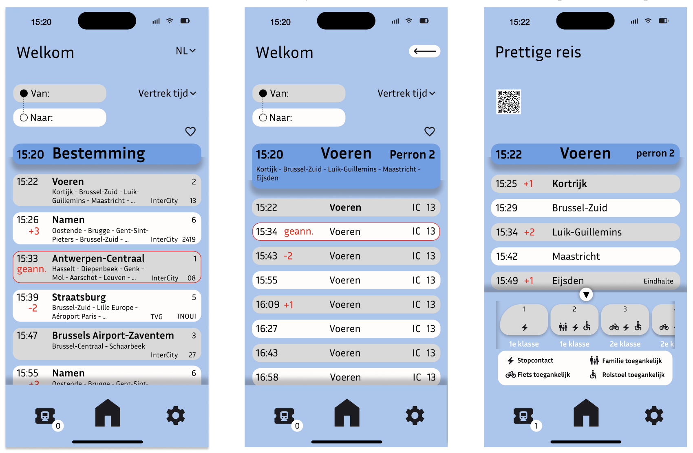
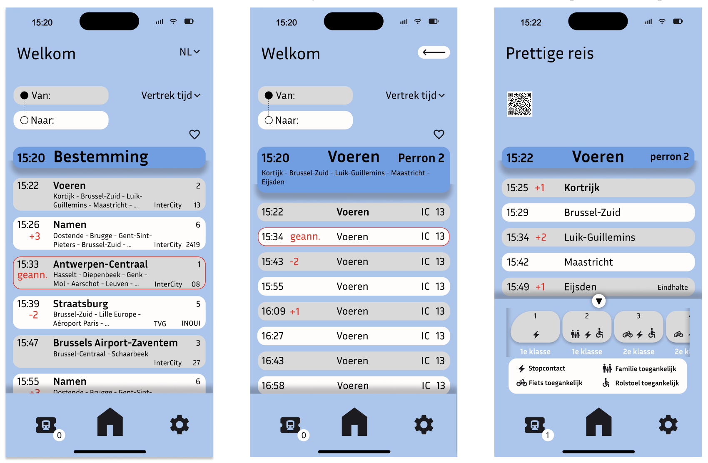

Ook de les van 24/11 kregen we de kans om feedback te vragen en verder te werken aan onze Tailwind en GSM schermen.
Tailwind: Deze week heb ik niet verder gewerkt aan mijn Tailwind.
GSM scherm: Ik heb mij vooral gefocust op de GSM schermen aangezien deze een soft deadline had.
 
